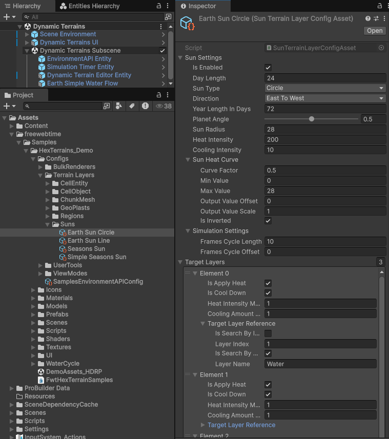

Sun Terrain Layer (Sun simulation → heat/cooling on GeoPlast)


This page documents the SunTerrainLayer feature:
- how a sun layer is created and initialized
- how it moves over the terrain (day/year progression)
- how it applies heat and cooling to GeoPlast
MaterialGeoPlastLayerinstances - what
SunTerrainLayerConfigAssetandCreateSunLayerRequestdo
1. Main types (at a glance)
| Type | Role |
|---|---|
SunTerrainLayer |
Runtime layer: computes SunPosition over time and schedules ApplySunHeatJob for target GeoPlast layers. |
SunTerrainLayerGroup |
Holds multiple SunTerrainLayer instances and simulates them in list order. Prevents double-simulating the same simulation frame. |
SunTerrainLayerGroupAuthoring + SunLayerBaker |
Authoring + baking: produces an ECS buffer of CreateSunLayerRequest on the terrain entity. |
SunTerrainLayerConfigAsset |
ScriptableObject config implementing ISunTerrainLayerConfig (settings + target list + initial day/year progress). |
CreateSunLayerRequest |
ECS buffer element: { Name, Args(ConfigAssetRef) } used to create/init layers in the group. |
ApplySunHeatJob |
Burst job: per-cell heat/cooling update into the target MaterialGeoPlastLayer.HeatMap. |
2. Authoring → ECS: how a Sun layer is created
2.1 SunTerrainLayerGroupAuthoring (scene authoring)
SunTerrainLayerGroupAuthoring is a MonoBehaviour with a list of authoring entries:
Name(string)Config(SunTerrainLayerConfigAsset)
2.2 Baking (SunLayerBaker)
During baking, SunLayerBaker adds a DynamicBuffer<CreateSunLayerRequest> to the terrain entity and fills it:
CreateSunLayerRequest.Name= authoring nameCreateSunLayerRequest.Args.Value= theSunTerrainLayerConfigAssetreference
This mirrors how GeoPlast layers are requested (see GeoPlastLayerGroupAuthoring / CreateGeoPlastLayerRequest):
CreateSunLayerRequestimplementsITerrainLayerFactoryand can delegate layer creation to the config asset.
3. Runtime container: SunTerrainLayerGroup
SunTerrainLayerGroup : HexTerrainLayerGroup<SunTerrainLayer>, IComponentData is the runtime container.
3.1 Per-request creation and naming
SunTerrainLayerGroup.CreateTerrainLayer(request):
- creates a
SunTerrainLayerinstance (default creation path) - if
request.Args.Value != null, sets:layer.Name = request.Name.ToString()
3.2 Initialization with SunTerrainLayerConfigAsset
SunTerrainLayerGroup.InitTerrainLayer(layer, settings, request) calls:
layer.Init(settings, request.Args.Value)
This is where the ScriptableObject config is actually applied (see next section).
3.3 Simulation cadence guard (per simulation frame)
SunTerrainLayerGroup.Simulate(...) stores LastSimulationFrame and returns early if the same HexTerrainSimulationTimer.FrameCount is passed again.
This avoids applying sun heat twice when multiple systems call simulate within the same simulation tick.
4. SunTerrainLayer lifecycle & fields
4.1 Core state
SunTerrainLayer stores:
float2 SunPosition(center of the sun in “cell-coordinate space”)float DayProgressin[0..1](fraction of a day cycle)float YearProgressin[0..1](fraction of a year cycle)SunSettings SunSettingsList<SunTargetLayerSettings> TargetLayers
4.2 Initialization (Init(settings, config))
When initialized with an ISunTerrainLayerConfig (which SunTerrainLayerConfigAsset implements), the layer copies:
SunSettings = config.SunSettingsTargetLayers = config.TargetLayers(list is created/cleared/copied)DayProgress = config.DayProgressYearProgress = config.YearProgress
5. Configuration types
5.1 SunTerrainLayerConfigAsset
SunTerrainLayerConfigAsset : ScriptableObject, ISunTerrainLayerConfig provides:
SunSettings SunSettingsIList<SunTargetLayerSettings> TargetLayersfloat DayProgress(initial)float YearProgress(initial)
It also exposes CreateTerrainLayer() => new SunTerrainLayer(), but in the current implementation this factory method is not used by CreateSunLayerRequest (because the request is not an ITerrainLayerFactory).
5.2 CreateSunLayerRequest
CreateSunLayerRequest : IBufferElementData contains:
FixedString128Bytes Name— the layer name used bySunTerrainLayerGroupfor lookup/registrationUnityObjectRef<SunTerrainLayerConfigAsset> Args— ScriptableObject reference used for initialization
5.3 SunSettings
SunSettings controls:
- whether simulation is enabled (
IsEnabled) - day/year timing (
DayLength,YearLengthInDays) - movement shape (
Direction,PlanetAngle) - heat/cooling parameters (
SunRadius,HeatIntensity,CoolingIntensity,SunHeatCurve) - simulation cadence (
FrameCycleSettings SimulationSettings)
Simulation cadence: FrameCycleSettings
SunTerrainLayer.Simulate(...) runs only when:
SunSettings.IsEnabled == trueSunSettings.SimulationSettings.IsSimulationTick(simTimer) == true
FrameCycleSettings.IsSimulationTick is:
- always true when
FramesCycleLength <= 1 - otherwise:
simTimer.FrameCount % FramesCycleLength == FramesCycleOffset
6. Sun movement over terrain (MoveTheSun)
SunTerrainLayer.MoveTheSun(simTimer) updates both:
SunPositionfrom currentDayProgress/YearProgress- the progress values themselves using
simTimer.DeltaTime
6.1 Horizontal position (day/night)
dayProgress = DayProgress % 1- if
Direction == EastToWest, it flips:dayProgress = 1 - dayProgress
- horizontal coordinate:
SunPosition.x = dayProgress * Settings.TerrainSize.x
So the sun travels across the full terrain width every in-game “day”.
6.2 Vertical position (seasons)
Vertical offset is a sinusoidal function of YearProgress:
verticalProgress = sin(radians(360 * YearProgress))terrainHalfHeight = Settings.TerrainSize.y / 2maxVerticalOffset = terrainHalfHeight * PlanetAngleSunPosition.y = terrainHalfHeight + verticalProgress * maxVerticalOffset
Interpretation:
PlanetAngle = 0→ sun stays on the equator (no seasons)PlanetAngle = 1→ full swing from one “pole” to the other over a year
6.3 Progress accumulation
deltaDay = (DayLength > 0) ? simTimer.DeltaTime / DayLength : 0DayProgress = (DayProgress + deltaDay) % 1
Year progresses in “days”:
deltaYear = (YearLengthInDays > 0) ? deltaDay / YearLengthInDays : 0YearProgress = (YearProgress + deltaYear) % 1
7. Applying heat/cooling to GeoPlast (Simulate → ApplySunHeat)
7.1 Which target layers can be affected?
Each SunTargetLayerSettings points at a GeoPlast layer via HexTerrainLayerReference TargetLayerReference.
At runtime, SunTerrainLayer.ApplySunHeat(...) resolves:
MaterialGeoPlastLayer targetLayer = geoPlastLayers.GetLayer<MaterialGeoPlastLayer>(TargetLayerReference)
It will only apply to MaterialGeoPlastLayer (because it requires AmountMap and HeatMap).
7.2 Scheduling model
For each configured target:
- read dependencies are acquired from
AmountMap - write dependencies are acquired from
HeatMap ApplySunHeatJobis scheduled overSettings.CellsCountwith a batch size ofSettings.CellsPerChunk- dirty chunk tracking is written into
targetLayer.HeatMap.DirtyChunks
Finally:
HeatMapis marked dirty (HeatMap.SetDirty(true)), so downstream update/render steps can recompute dependent maps.
8. ApplySunHeatJob: exact heat/cooling behavior
ApplySunHeatJob.Execute(cellIndex):
8.1 Cells with no material are ignored
If AmountMap[cellIndex] <= 0 the job returns immediately.
Effect:
- empty cells do not get heated
- empty cells do not get cooled
HeatMapremains unchanged there
8.2 Heat/cooling gating flags per target
If both are false, nothing happens:
IsApplyHeat == falseANDIsCoolDown == false→ return
8.3 Heat formula
If IsApplyHeat:
- Compute distance-to-sun based on
SunType:
SunType.Circle:- distance = Euclidean distance to
SunPosition - if the terrain is connected/wrapped, it tests shifted positions
(x,y) ∈ {-1,0,1}²(respectingSettings.IsConnectedHorizontally/Vertically) to find a closer wrap-around distance
- distance = Euclidean distance to
SunType.Line:- distance =
abs(SunPosition.y - cellPosition.y) - if vertically connected, it also tests wrap-around distances by shifting
cellPosition.yby±TerrainSize.y
- distance =
SunType.EveryCell:- distance = 0 (all cells treated as “under the sun”)
- Evaluate the heat curve:
curveFactor = SunHeatCurve.Evaluate(distanceToSun)
- Accumulate:
deltaHeat += HeatIntensity * DeltaTime * curveFactor * HeatIntensityMultiplier
8.4 Cooling formula (night / out-of-sun cooling)
Cooling is applied only when:
IsCoolDown == true- AND the sun did not add any heat for this cell in this tick (
deltaHeat <= 0)
Then:
deltaHeat -= CoolingIntensity * DeltaTime * CoolingAmountMultiplier
Important implication:
- To actually reduce heat,
CoolingIntensityshould typically be positive (because it is subtracted). - Heat is clamped to non-negative after update (see below), so “below zero cold” is not represented in
HeatMap.
8.5 Clamp and dirty chunks
Final write:
HeatMap[cellIndex] = max(HeatMap[cellIndex] + deltaHeat, 0)
Dirty marking:
- computes
chunkIndex = TerrainSettings.GetChunkIndexByCellIndex(cellIndex) - adds it to
DirtyChunks
9. How sun heat affects GeoPlast “temperature” (and why it matters)
The sun writes into MaterialGeoPlastLayer.HeatMap.
Downstream in GeoPlast update:
TemperatureMapis derived from:Temperature = Heat / Amount
- many behaviors (e.g., temperature-driven density or vertical flow) depend on temperature
So the sun’s effect typically propagates as:
- sun modifies
HeatMap - GeoPlast update recomputes
TemperatureMap - subsequent GeoPlast simulations (heat diffusion/advection, temperature-dependent density/flow) use the updated temperature
10. Serialization notes (current behavior)
SunTerrainLayer implements ISerializableTerrainLayer and serializes:
SunPosition,DayProgress,YearProgressSunSettings(enabled, timing, geometry, intensities, heat curve parameters, sun type, direction)
11. Practical setup checklist
- Add
SunTerrainLayerGroupAuthoringto the terrain GameObject. - Add one or more layer entries:
- set
Name - assign a
SunTerrainLayerConfigAsset
- set
- In the config asset:
- enable
SunSettings.IsEnabled - set
DayLength,YearLengthInDays,PlanetAngle - choose
SunTypeandSunRadius - configure
HeatIntensity,SunHeatCurve - optionally configure cooling (
IsCoolDownper target +CoolingIntensity) - define
TargetLayersthat reference MaterialGeoPlastLayer layers (by name and/or index viaHexTerrainLayerReference)
- enable